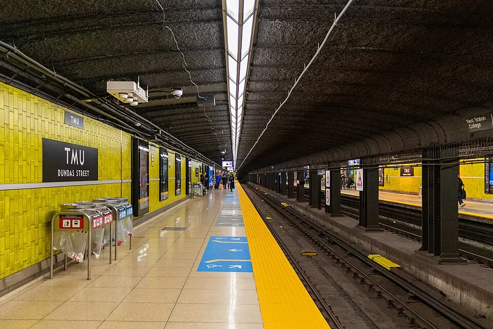

Signal
SignalStation atlas / TMU
Station history
TMU


Station history
The station opened as Dundas. Shallow platforms had separate fare controls on each side and stairs directly to street level.
Dundas became TMU following a naming agreement with Toronto Metropolitan University.